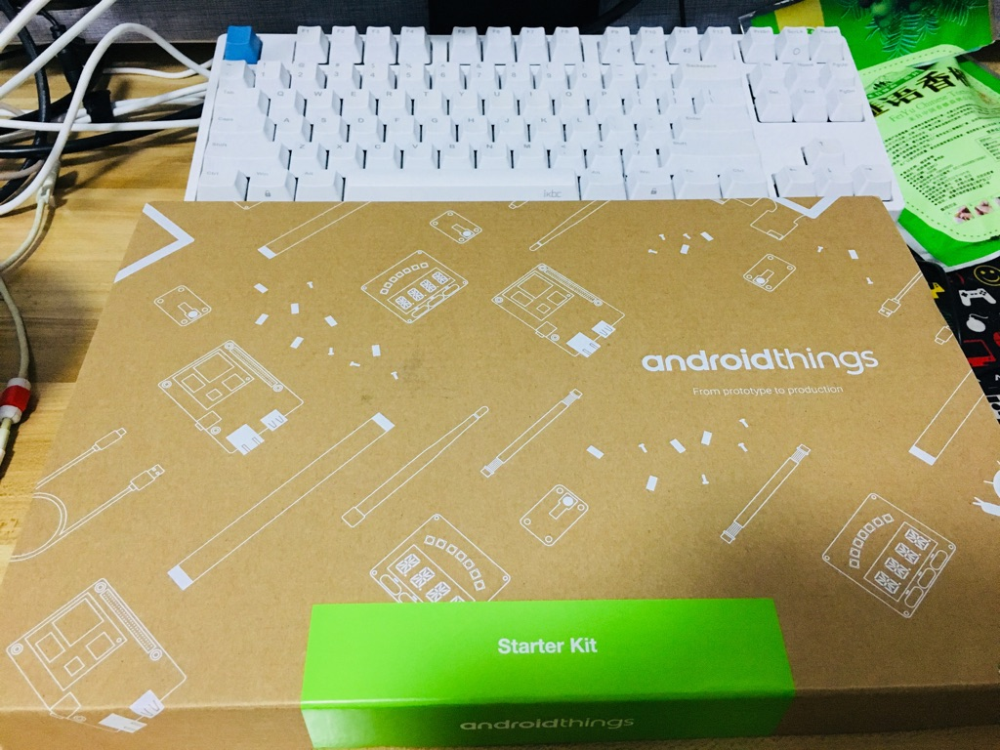
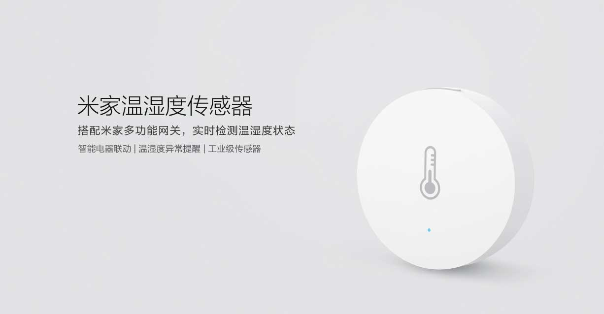
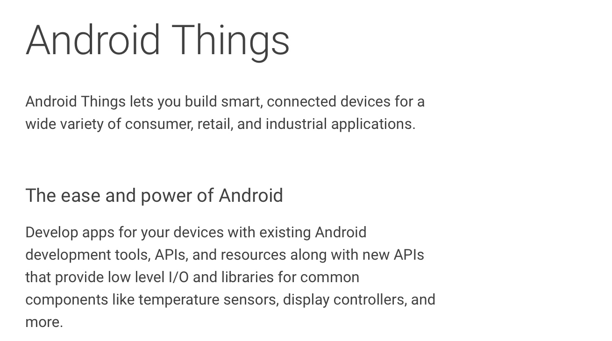
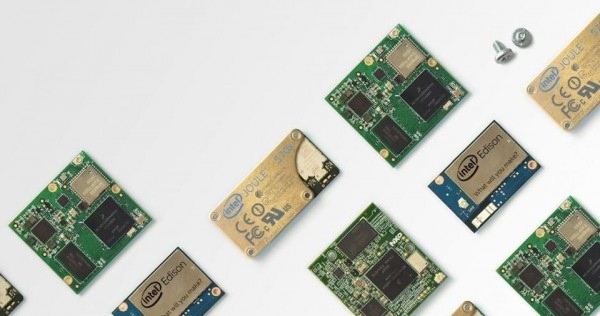
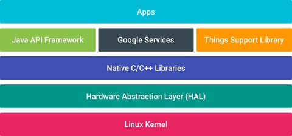
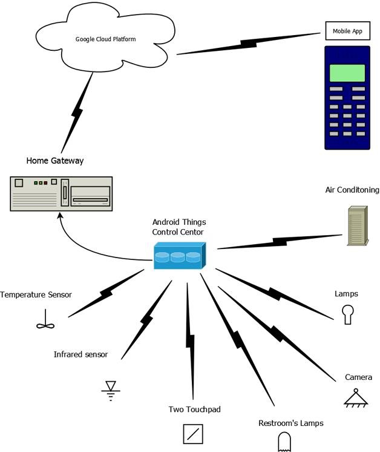

2018 年 Google IO 大会给我们带来了最新的 Android Things 1.0 版本，也为与会者提供了一份完整的 Android Things develop kit。刚好有一个好朋友也去参加了这一次的 IO（羡慕ing），拿到了一套，并且慷慨的送给了我，在此先谢谢方大神！

0x00 物联网简述
在正式了解 Android Things 之前，先介绍一下 Iot(Internet of Things)，即所谓的物联网。
从最早期的短距离组网技术，到全球范围内的因特网，逐渐进化到如今的无线网络时代，接入网络的设备数量越来越庞大，接入的种类越来越多，而接入的方式也是越来越简单，物联网描述了一个所有可接入网络设备进行无缝衔接并交流的一种全新的生活方式。当生活中的种种设备都能够通过网络，甚至于通过智能家庭中心进行控制的时候，可以想象未来的生活便利程度。
物联网技术的普及其实是基于非常多的技术的广泛运用，从底层使用的协议栈，到应用层的智能化，早在1999年便开始提起的技术，直到最近几年才真正的有机会被应用到市场中。
物联网的最常见的例子有，智能家居（包括但不限于智能灯泡，智能扫地机器人，智能音箱），车载物联网系统（定位，导航等），共享单车（解锁，定位等）。随着应用的不断普及，接入的厂商越来越多，整个市场规模也越来越庞大。

0x01 Android Things 是什么
介绍完了 Internet of Things, 那么什么是 Android Things 呢？

Android Things 是 Google 开发的一款针对物联网产品的操作系统。早在2016年底，Google 就 release 了最初的 Android Things 开发者版本，它的前身其实就是 Google 的 Brillo 操作系统，添加了更多的 Android Java API 以方便开发者进行开发，并且支持使用 Android Studio 进行开发。对于一个 Android 开发者而言，Google 此举无疑是重大利好。

0x02 Android Things 能用来做什么
对于我这样的实用主义者而言，对于一个产品我更关注的是，我能用它来做些什么，或者说，我能用它来改变些什么。如果只是一个用来写个 Hello world 或者点个灯看 Bling Bling，那也没必要再多费口舌了。
简单而言，Android Things 可以为你的智能家居，智能出行，智能生活打下坚实的软件基础。未来生活中的智能设备，可能都会有 Android Things 参与其中，当然目前而言这还是个幻想，怎样拿下这块市场是 Google 需要操心的事情。
从2017年开始，Google 的口号便从 Mobile First 转向 AI First，今年的 IO 我们也看到了 Google Assistant 恐怖的以假乱真的能力（Refer to here）。 而更多的连接到 Google 云端的设备也将会为我们提供更多更便利的服务（国内的笑笑就行了）。
0x03 Android Things Power

熟悉 Android 开发的同学可能会对这张图感到十分的眼熟，图中除了 Support Library 与 Android 架构不同之外，几乎可以说是一模一样。再加上可以使用 Android Studio 进行开发（Kotlin 也同样支持），支持 Firebase API 的一些子集（去除了认证等模块），支持基于 Tensorflow 的本地机器学习能力，基于 Google Cloud 的连接能力，基于 Google Assistant 的智能化程度， 再加上无比庞大的 Android 使用者与开发者群体。随着厂商的逐步接入与适配，相信 Android Things 的正式产品离我们不会很远了。

0x04 说了这么多...然后呢？
作为一名消费者，对于 Android Things 暂时还不需要抱有特别多的关注，目前智能家居的体系还不是非常成熟，国外的 Google/Apple/Amazon，国内的小米/天猫/京东，大家都还处于一个探索阶段，想尝鲜的话可以考虑国内厂商的某些产品（本土化更好）。
对于开发者而言，由于 Android Things 采用了与 Android 类似的架构设计与 API，未来想要接入到 Things 平台想必也不会特别麻烦。
对于智能硬件厂商而言，那些有实力有资源自己开发操作系统的厂商自然不用多说，而那些资源不是很充足的厂商，未来更有可能采用某一家公司提供的操作系统方案，而选择某一个方案的时候最优先考虑到的应当是安全性和开发难度。Android Things 背靠着 Google 这棵大树，相信未来也会有很多的厂商愿意采用。
而对于我们而言，这只是一家不存在的公司发布的一个不存在的产品，洗洗睡吧。